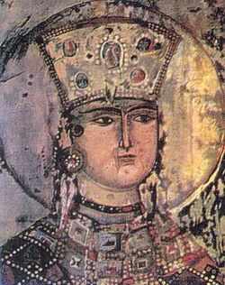
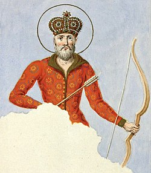

აღმოსავლეთ ევროპასა და დასავლეთ აზიას შორის მოქცეული საქართველო გამოირჩევა უძველესი დროიდან დათარიღებული ისტორიის მდიდარი გობელენით. დასახლებული იყო სხვადასხვა ცივილიზაციებით, მათ შორის კოლხები და იბერები. მთელი თავისი ისტორიის მანძილზე საქართველო ებრძოდა ბერძნების, რომაელების, სპარსელების, არაბების, მონღოლების, ოსმალების და რუსების შემოსევებს. ამის მიუხედავად, მან შეინარჩუნა დამოუკიდებლობის პერიოდები, აყვავებული შუა საუკუნეებში ბაგრატიონთა დინასტიის დროს. მე-19 საუკუნეში იგი ანექსირებული იყო რუსეთის იმპერიის მიერ, მოგვიანებით გახდა საბჭოთა კავშირის ნაწილი 1991 წელს დამოუკიდებლობის აღდგენამდე. მას შემდეგ, საქართველო ებრძოდა პოლიტიკურ და ეკონომიკურ გამოწვევებს და შეინარჩუნა უნიკალური კულტურული მემკვიდრეობა
დავით IV აღმაშენებელი (დ. 1073,[3] ქუთაისი — გ. 24 იანვარი, 1125[4][5]) — საქართველოს მეფე 1089-1125 წლებში, გიორგი II-ის ძე, დიდი სახელმწიფო მოღვაწე და ძლევამოსილი მხედართმთავარი, რომელსაც განსაკუთრებული ადგილი უკავია საქართველოს ისტორიაში. დავით IV ტახტზე 1089 წელს 16 წლის ასაკში ავიდა. მამამისი, გიორგი II, შექმნილი პოლიტიკური მდგომარეობიდან გამომდინარე, იძულებული გახდა შვილის სასარგებლოდ ტახტზე უარი ეთქვა. დავითს ძალიან მძიმე მემკვიდრეობა ერგო: ქვეყანა დარბეული იყო მტრის შემოსევებისაგან, თურქ-სელჩუკთა მომთაბარე ტომები სახლდებოდნენ დაპყრობილ ტერიტორიებზე და ქართველ ხალხს ფიზიკური განადგურების საფრთხეს უქმნიდნენ, დიდგვაროვანი ფეოდალები მეფეს ხშირად არ ემორჩილებოდნენ, საქართველოს მეფის ხელისუფლება ლიხის ქედის აღმოსავლეთით არ ვრცელდებოდა.[6]

თამარი, თამარ მეფე (დ. დაახ. 1160 — გ. 1213, შესაძლოა 1210 ან 1207) — საქართველოს მონარქი 1184 წლიდან, გიორგი III-ის ასული, ბაგრატიონთა სამეფო დინასტიის წარმომადგენელი. თამარს საქართველოს ოქროს ხანაში მოუწია მეფობა და უაღრესად წარმატებული მმართველი აღმოჩნდა. თამარი ატარებდა ტიტულს: „მეფეთ მეფე და დედოფალთ დედოფალი აფხაზთა, ქართველთა, რანთა, კახთა და სომეხთა, შირვანთა და შაჰანშათა და ყოვლისა აღმოსავლეთისა და დასავლეთისა თვითმფლობელობითა მპყრობელი“.
მეფე ვახტანგ I გორგასალი, რომელიც მეფობდა დაახლოებით 447-502 წლებში, პატივცემული ადგილი უკავია საქართველოს ისტორიაში, როგორც ხილვატორ ლიდერს და დედაქალაქ თბილისის დამაარსებელს. ლეგენდა მოგვითხრობს, რომ ვახტანგმა ნადირობისას აღმოაჩინა ამ მხარეში ცხელი წყაროები და გადაწყვიტა დაეარსებინა ქალაქი, რომელიც მოგვიანებით გახდება თბილისი. მისი მმართველობის დროს საქართველომ დაინახა წინსვლა მმართველობაში, კულტურასა და ვაჭრობაში. ვახტანგს ახსოვთ საქართველოს სახელმწიფოებრიობის განმტკიცებისა და გარე საფრთხეებისგან მისი დაცვის ძალისხმევით, რის გამოც მას ქართულ ფოლკლორში ეპითეტი „გორგასალი“, რაც „მგლის თავის“ ნიშნავს. მისმა მეფობამ საფუძველი ჩაუყარა შუა საუკუნეების ქართული სამეფოს განვითარებასა და გაფართოებას. ვახტანგის მემკვიდრეობა აღინიშნება ქართულ მწერლობაში, ფოლკლორსა და ეროვნულ ცნობიერებაში, განასახიერებს გამძლეობისა და სახელმწიფოებრიობის სულისკვეთებას, რომელიც ახასიათებს საქართველოს ისტორიას. მისი წვლილი შენარჩუნებულია თბილისის მუდმივი სიმბოლოს მეშვეობით, რაც ადასტურებს მის მუდმივ გავლენას ქართულ იდენტობასა და ეროვნებაზე.
